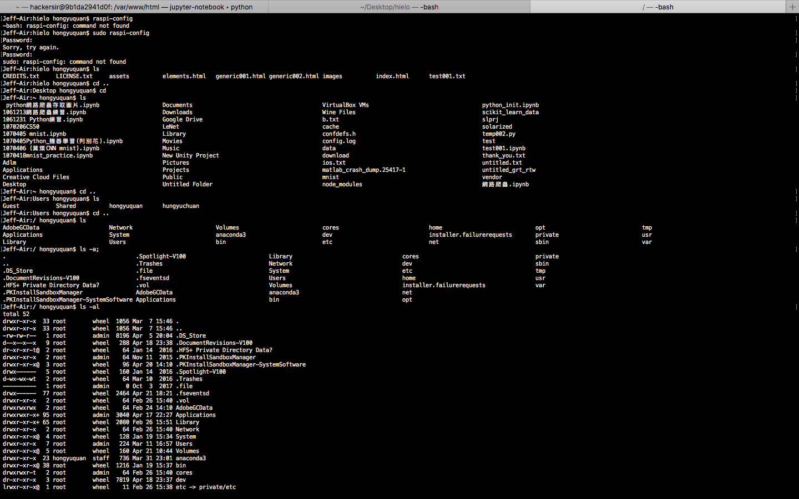
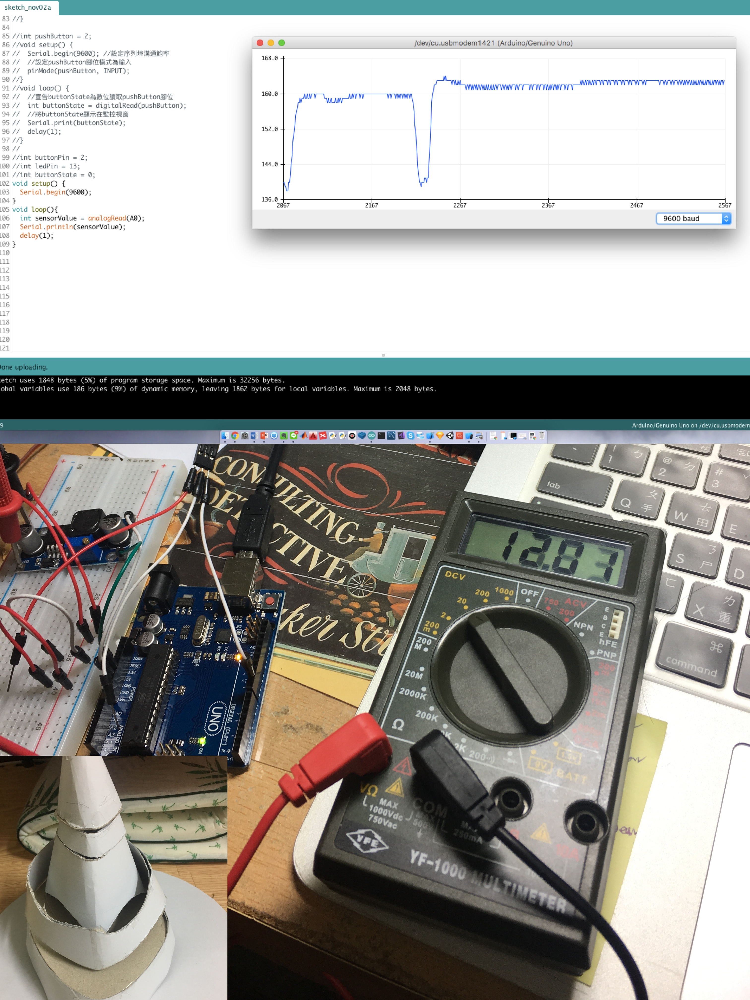
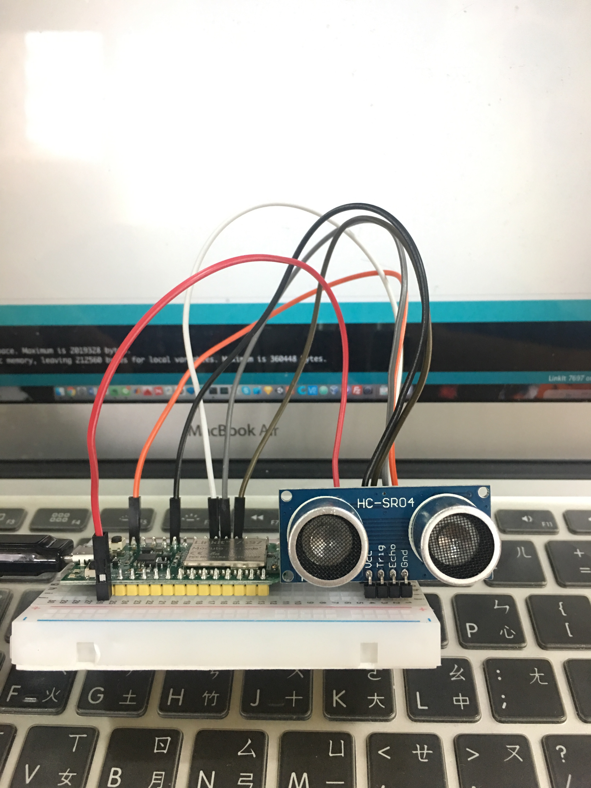
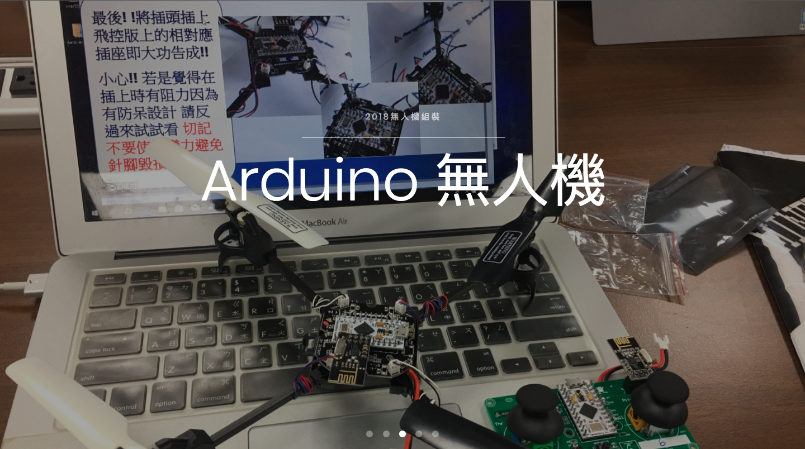

第一次挑戰，畢生難忘
Linux指令 x Python編譯

♦動機：上大學後就不斷聽到樹莓派的有趣之處，就這樣不知不覺進入了Linux的世界。但是，之前的我是Windows使用者，根本就不熟悉Linux終端機指令，於是就上Udemy註冊了一門課-Linux終端機編程，這才對Linux使用漸入佳境。
♦心得：個人覺得Linux的作業系統(operating system)剛開始很嚇人，但熟悉之後，反而開始享受自己在終端機暗暗的屏幕上流利遊走自如，完全沒有使用GUI介面十的卡頓感。除此之外，尚有有多開源軟體是用Linux，因此學會Linux指令後也覺電腦問題更方便。

♦動機：Arduino是我大二的時候，計算機程式老師引領我入門的，帶給我許多驚喜感。於是我突發奇想，想要製作一頂哈利波特影集裡曾出現的分類帽（上圖圖示）。我將分類帽切成三部分，由上而下分別是：帽子、眼睛、嘴巴，分別用伺服馬達連接（分別是：一個、兩個、兩個）。目標是模擬分類帽說話的上下移動，接上音樂後更是栩栩如生。
♦心得：這個裝置藝術花最久的時間莫過於伺服馬達的校正，因為Arduino的IDE是用C++寫的，因此在編寫上也學會了許多C++的編寫方式（比方說：void setup{}），這也歸納出C++重要的概念其實也三點，分別式：變數、結構、函數，只要清楚他們之間的關係，就能暢通無阻。

♦動機：我參加中彰投勞動力勞動發展署舉版的Linkit7697學習營，收穫頗豐。剛開始先做led的操作，最後更使用雲端MCS當感測器中繼站、AWS的node-red佈署，讓感測器所讀取的資料能夠以圖形化的方式呈現給眾人，學習到很多。
♦心得：第一次接觸到這塊板子，沒想到他跟樹莓派原理是一模一樣，有WI-FI模組、有GPIO，於是很快就上手。比較傷腦筋的是通訊協定MQTT，很少使用。幸好，最後在一步一腳印下，最終也成功將資料從本地端上傳到雲端。

♦動機：加入黑客社因緣際會所學習到的技能。非常有趣，您現在所看到的網頁就是我自己架設下伺服器所呈現的網頁。架設網站更加深了我對網路的認識，比方說這個網頁在要開在哪個port?是否搶到負責發送訊號的port，處處都是眉角、處處留心皆學問。
♦心得：架設自己的網站一直是我從小到大的夢想。之前因為用python爬蟲碰到許多網頁上的問題，但在自己架設網站過後，除了網頁語言（HTML、CSS、JS）更熟悉外，也更了解網路的箇中原理，之前的問題更是豁然開朗。